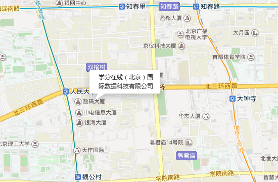

学分在线（北京）国际数据科技有限公司，是一家深耕于互联网教育领域，突破世界范围内流行的MOOC（大型开放式网络课程）和SPOC（小规模私人在线课程）模式，创造性的提出COOC（Credits Online Open Courses，即：学分在线开放课程）模式的创新型互联网科技企业。
“学分在线”是面向全球的大规模学分在线开放课程(COOC) 学习平台，面向全球提供在线课程，可为全球学子提供学历和非学历教育，提供在线考试题库，学生可以实时与老师进行在线交流，不受时间和空间的限制，从而实现优质教育和自由学习的目的。
学分在线是由一批具有创业精神、社会责任感和热爱互联网教育事业的年轻人组成，我们的背后有着同样热爱教育事业的专业投资人的大力支持。更重要的是学分在线由于你们的参与而更加精彩！你们迈出的一小步，将成就互联网教育事业的一大步，COOC（Credits Online Open Courses，即：学分在线开放课程）是我们共同的事业，未来的互联网教育将给人类的文明和进步带来强劲的发展动力。
承办2015年互联网教育大会
电话： 010-57113667
邮箱：kefu@studybanks.com
地址：北京市海淀区北三环西路48号院2号楼（北京科技会展中心2号楼19B）

学分在线十分重视您个人信息的保密性和安全性。我们将根据本隐私政策合理的努力保护您的个人信息(下称“个人信息”，定义见下文)的安全。本隐私政策中使用的“我们”均指学分在线。
本隐私政策仅适用于我们通过学分在线（下称“本网站”，包含studybank.com域名下的所有内容和页面）收集的信息，不适用于我们可能通过其他方式向您收集的信息（例如，本隐私政策不适用于您可能通过电话、传真或日常信函向我们提供的信息）。
您在我们用于公开交流或课程注册后学生之间交流的本网站的其他页面上发表的评论和其他信息可能被本网站的其他访问者浏览或下载。为此，我们鼓励您在决定是否在上述公开页面或课程参与者可浏览页面上发布可能显示您的身份的任何信息时慎重考虑。
通过访问本网站或向学分在线提供信息，您理解并明确同意我们为本隐私政策和学分在线服务条款所约定的目的在中华人民共和国、其他国家和地区收集、使用、披露和保存信息。您特此同意学分在线依本隐私政策收集、使用、披露和保存您的个人信息，包括但不限于在学分在线和本隐私政策所述的第三方、附属机构及分支机构之间转移您的个人数据。为进一步确定，关于本条所述的转移信息的任何同意应视为包含您同意将适用的个人信息转移至另一司法区域，该区域的隐私保护程度可能与您所在国家的隐私保护程度不同。
如果您不同意本隐私政策的条款，您无权访问、浏览或注册本网站。如果您选择不向我们提供本网站为您提供各种服务所必要的信息，您可能无法创建用户帐号，我们可能无法向您提供该等服务
您使用本网站时（例如您注册用户帐号或经本网站进行交易时）可能向我们提供的关于您的任何信息，可能包括但不限于您的姓名、联系信息、性别、出生日期和职业，如果您注册实名认证成绩证书，还可能包括机动车驾驶证或国家机关颁发的其他身份证明。
我们尽力把个人信息的收集范围控制在为满足商业和法律法规要求，为特定的本网站的行为所需要的范围之内。例如，如果您希望购买实名认证成绩证书，我们将收集必要的个人信息以验证您的身份，更多内容请见学分在线那服务条款。如果您不希望提交该等必要的验证信息，您将无法通过本网站购买该等证明。
学分在线目前不向您收集财务信息；但是如果您选择购买实名认证成绩证书或者在线付费课程，您将会被转接到第三方服务商处理支付交易；您的支付信息的提交将适用支付登录页面上显示第三方支付平台的条款。
当您注册用户帐号，参加在线课程，注册付费证明，向我们发送电子邮件和/或参与公共论坛时，我们将收集信息，包括上述个人信息。我们也收集关于学生表现和学习模式的使用信息。此外，我们还记录显示以下内容的信息：本网站哪些页面被访问，其被访问的顺序和被访问的时间，哪些超链接和其他用户界面控件被使用等。
我们可能记录本网站的每个用户所使用的IP地址、操作系统和浏览器软件（不会涉及记录用户电脑的其他数据），我们可能从IP地址确定用户的互联网服务提供商和其连接点的地理位置。我们将适用各种网络分析工具收集这些信息。一些信息将通过Cookie（即本网站可以接触到的、存在您电脑上的、存储着有关您的信息的小文本文件）收集。您应该能够控制您的Web浏览器如何以及是否接受Cookie。大多数浏览器都在工具栏上的“帮助”部分提供关于如何重置浏览器以拒绝Cookie的说明。如果您拒绝我们的Cookie，本网站的许多功能和服务可能无法正常工作。
我们和通过学分在线提供课程的教育机构（下称“大学”）还可能为下列各项相关目的使用通过本网站收集的您的信息。如果我们分享和披露您的个人信息：（1）第三方接收者应以保密的方式处理个人信息，并采取充分的安全措施保护信息不受损失、滥用、未经授权的访问或披露、修改及破坏；以及（2）我们仅为满足收集时已说明的目的向第三方披露和分享其需要的个人信息：
我们将与大学分享我们收集的信息，以及我们和大学可能按如下约定与第三方分享信息(包括个人信息)：
此外，我们还可能与公众或第三方（包括但不限于研究人员及商业合作伙伴）分享汇总信息，但不会分享能识别您个人身份的信息。
我们的目标是尽可能为现在和未来的访问者提供最好的学习体验。为进一步实现此目标，我们有时会向不同的用户呈现不同版本的课程资料和软件。之所以这么做，是为了向个人学生提供个性化体验（评估学生的学习水平和学习风格，为其呈现最合适的资料），评估我们的课程资料的有效性，增进我们对学习过程的理解，以及提高我们提供的内容的有效性。我们可能发表或以其他形式公开此过程的结果，但除非本隐私政策另有约定允许，上述发表或公开披露均不会包含个人信息。
本网站包含了前往第三方（包括其他内容提供者以及某些服务供应商，如代表学分在线处理支付的服务商等）发布的网站的链接。这些网站不在我们控制范围之内，您确认并同意，除非本隐私政策中另有约定，我们不必为该等网站收集和使用您的信息承担责任。我们鼓励您在被转接至第三方网站时了解并查阅您访问和使用的每个网站的隐私政策。
学分在线设计了一套保护其持有或控制的个人信息的程序，但是互联网传输方法或电子存储方法均非100%安全，因此学分在线无法保证个人信息的绝对安全。
请注意，我们可能随时审查并修改本隐私政策。本隐私政策修改后，本隐私政策链接将包含注记“更新（日期）”，这意味着您应查阅新条款，任何修改在本页面上发布后立即生效，同时旧版本不再使用，并附更新后的生效日期。至少在更新后七（7）天内，本隐私政策链接将显示更新注记。在本网站进行任何修改之后，您访问本网站即视为您已同意修改后的本隐私政策和本网站的其他全部修改。如果您错过了前述通知，请定期访问本网页以了解本隐私政策的最新版本。
本网站并非为13周岁（泛指小学阶段）以下的个人设计，学分在线并未明知而收集前述年龄段个人的数据。如果我们知悉任何13周岁以下个人进行了注册，我们将从记录中删除任何相关个人信息。
如果您有隐私顾虑，或者披露了您希望保密的数据，或者希望访问我们持有的关于您的信息，请联系我们。